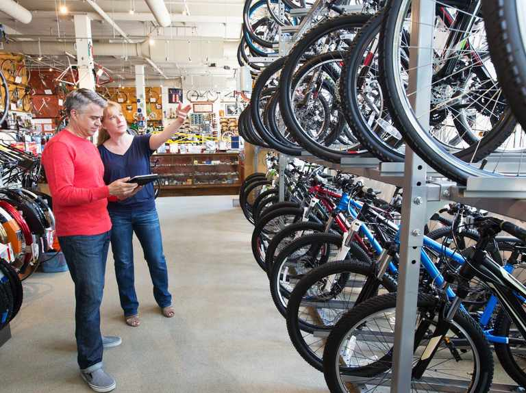

Forage Internship Project: Analyzing Customer Trends and Company KPIs
During my internship with KPMG, I undertook a dynamic project focused on analyzing customer trends and key performance indicators (KPIs) for the company.
This project is focused on data cleaning and manipulation using SQL, and data visualization using Tableau and PowerBI
In this exciting project, I created an E-commerce Sales Data Report Using Power BI. This project showcases my knowledge and skills acquired while working with the PowerBl tool. This report offers valuable insights into the sales analysis of an e-commerce company delivering all over the world.

Data Analysis of call trends of Pwc company during my internship with Forage. This project analyses the company's KPIs and gives insights into Overall customer satisfaction, Overall calls answered/abandoned, Calls by time, Average speed of answer, and Agent’s performance quadrant.
In this project, I used Microsoft Excel to analyse data focused on understanding UK accident trends for the years 2021 and 2022.
This project showcases my capacity to use Excel spreadsheets to translate raw data into meaningful insights. It illustrates my aptitude for thorough analysis and effective communication through visualization.
In this project, I delved into an extensive analysis of a dataset sourced from a survey of data analysts, with a primary focus on their salaries, geographic distribution, and overall job satisfaction. The process entailed data cleaning and preparation, addressing missing values, outliers, and inconsistencies to ensure a reliable foundation. The project showcases my use of PowerBi to carry out data cleaning, analysis, and visualization.

In this Microsoft Excel project, I undertook an in-depth analysis of a bike purchase dataset, focusing on the purchasing behavior of individuals related to bikes. The project involved the following systematic steps, utilizing various Excel functionalities to clean, manipulate, and visualize the data effectively.